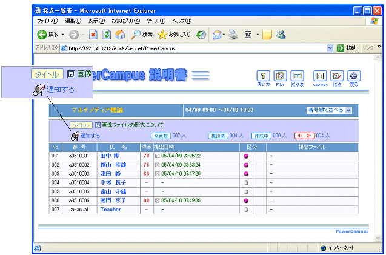
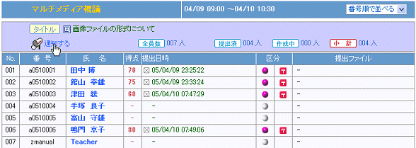

|
電子メールで，それぞれの学生に差込みメールを一斉送信します．送信内容は課題のタイトルや点数です．ただ，レポート課題の場合のみ，提出された解答もメールの中に書き込まれています．
送信のためには，一覧表左上にある「通知する」と書いたボタンをクリックします．

電子メールを送信すると，区分欄に赤い郵便マークがついて，送信済みであることを示します．このマークがついていると，重複してメール送信はできません．つまり，「通知する」ボタンを再度クリックしても，もう一度メールが出されるということはありません．
ただ．採点の修正などで，メールを再送したい場合があります．その場合は，赤い郵便マークをマウスでクリックしてください．クリックするとマークが消えます．そのあと，「通知する」をクリックすると，マークの消えていた該当の学生にのみ，メールが送信されます．

|
|
 採点通知
採点通知
 ウェブ上での通知
ウェブ上での通知
 電子メールでの通知
電子メールでの通知